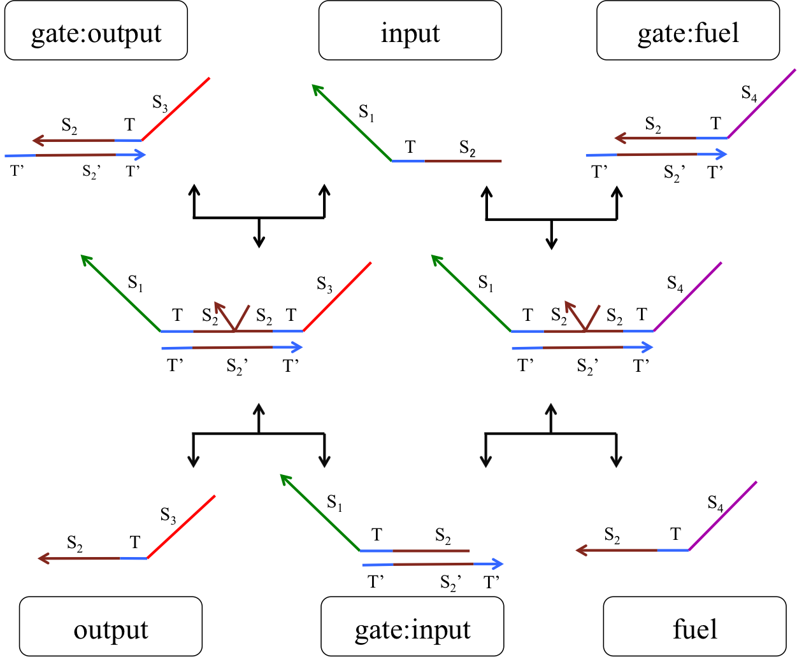
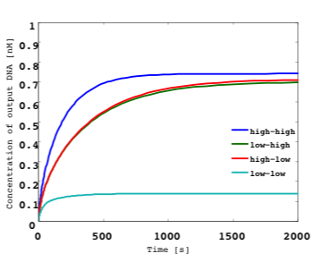

The principles of A/D conversion are very simple. A digital signal is obtained by segregating a natural analog signal at regular intervals. The resultant discrete data can be expressed as shown in the figure below. When an analog waveform is discretized at regular intervals (red line), each data-point is converted to a digital value at time t. A computer performs various processes by storing such information in the central processing unit (CPU).
If you want to know about A/D converter in electrical system, see the "Supplement"
Our DNA analog-to-digital (A/D) converter reads concentration of input molecule and converts it to binary numeral such as 0 or 1 depending on the concentration of DNA. We designed A/D converter based on DNA parallel comparison type A/D converter in electric system by using DNA digital circuits. A/D converter has various methods such as “Double Integral Type”, “Successive comparison Type”, and “Parallel Comparison Type”. Table1 shows element of each type and possibility in replacing DNA. We focused “Parallel Comparison Type A/D converter” in this time by considering possibility. It is difficult for us to design two types except for parallel comparison type because double integral type needs integrator and successive comparison type needs digital-to-analog converter. As for comparison type A/D converter, it is mainly consisted of logical circuits. For the above reasons, we decided to design DNA A/D converter based on Parallel Comparison Type A/D converter. If you want to see our discussions about each A/D converter in detail, please see the "Supplement".
Figure 3 and Figure 4 shows A/D converter structure. We explain our A/D converter process below.
Step 1:
As shown in Figure 3, we typically use resistances setting to regulate the input value in an electrical system. However, the DNA concentration in a DNA circuit system cannot be gradually reduced gradually in the case of a voltage divider. Therefore, we applied an Enzyme free device (1) from Tohoku University in BIOMOD2014. (http://teamsendai2014.github.io/) This device can generate different DNA strands in a given arbitrary order. We focused on two aspects of this device. Firstly, multiple outputs can be obtained from a single input and secondly, the initial transducer concentration is equal to the output DNA concentration. In our project, we applied this device to the production of molecules with a given concentration.In dry experiments, we generated six molecules with various reference concentrations (0.6, 0.5, 0.4, 0.3, 0.2, and 0.1 nM).
Step 2:
Next, we compared the reference concentration generated in Step 1 to the input DNA concentration by using a threshold gate. The threshold gate output was defined as “1” (high) when it exceeded 0.6 nM. Conversely, we defined outputs of less than 0.6nM, as “0” (low). This means that if the input DNA concentration was higher than the reference concentration, the output was “1”; otherwise, the output was “0”. For an input molecule concentration of 0.35 nM, the DNA strand was released from the top to the third gates through the threshold gate as “1”. Otherwise it was released as “0”.
Step 3:
Next, we used NOT gate and AND gate to examine the “1” ““0” threshold from Step 2, which can indicate where the input DNA concentration corresponds to the reference concentration. As a result, “1” “”0” threshold was found to be the third AND -gate from the top-, with A4 being set to “1”.
Step 4:
Finally, the DNA information from Step 4 was encoded through the encoder.
As shown in Figure 4, the encoder consists of an OR gate. In Step 3, A4 was set to “1”, and then x2, x1, and x0 became “1”, “0”, and “0”, respectively, through the encoder. We defined x2 as the most significant bit. Therefore, the conversion result was “100” in this case. This result corresponds to 0.3−0.4 nM in Table 2, and we could confirm that the input molecule concentration (0.35 nM) was converted to 3 bit.

In this way, we can convert the input DNA that exceeds the threshold molecule concentration for the first time to a 3-bit digital number using our DNA analog-to-digital (A/D) converter. Although, this A/D converter is currently outputting a 3-bit result, “n”-bit expressions can be obtained using 2n-1 comparators.
See “Dry experiment” for the simulation result for our DNA A/D converter.
In our project, we designed the following DNA circuits and combined them to realize a DNA A/D converter.
A seesaw gate is based on a DNA strand displacement reaction, and it is possible to realize a logic circuit by combining this gate appropriately. The basic function of a seesaw gate is to compare an input signal to a set threshold. Then, if the input concentration is less than the threshold, the input signal is released. If the input concentration exceeds the threshold, the output is generated by DNA hairpin loops, which are used as fuel. The seesaw gate is composed of two DNA molecular reactions, the first of which is the threshold process. Figure 5 shows a model of the threshold process.
Figure 5: Threshold model
The input molecule including a S1TS2 sequence is single-stranded DNA (ssDNA) and the DNA deciding the threshold is double-stranded DNA (dsDNA) that includes a toehold domain T’. Finally, the input ssDNA is consumed through the DNA strand displacement reaction based on T’. Therefore, the input DNA concentration must exceed the threshold concentration for gate operation to occur.
The second DNA reaction is the output generation process. Figure 6 shows a strand displacement model of this process.

Figure 6: Output generation process
As shown in Figure 6, the input ssDNA causes a strand displacement reaction with “gate:output”, yielding a single strand output and “gate:input”. Moreover, the fuel and gate:input cause a strand displacement reaction, and the gate:input is replaced by input ssDNA and “gate:fuel”. This is because the gate:input includes T’, which combines with the fuel. The important aspect of this reaction is that the consumed input ssDNA is replenished by the fuel. Figure 7 shows the structure of each DNA strand in the seesaw gate.
First, we explain gate structure.
Figure 8a shows a simplified wire-structure diagram. A wire is a signal strand connecting each gate. Here, we show a wire connecting the right side of “gate-i” to the left side of “gate-j” and define it as wi,j .
Figure 8b shows a simplified diagram of a seesaw gate circuit. Gate-i can be connected to another gate by an arbitrary number of wires on each side. The initial concentration of the wi,j signal is written on each wire linking the right side of gate-i to the left side of gate-j. The initial concentrations of the gj,i:i (wi,j, which combines with gate-i) and gi,j:j (wi,j, which combines with gate-j) gate complexes are written in parallel node. The initial concentrations of the threshold thj,i:i to wj,i reaching gate-i and the threshold thi,j:j to wj,i reaching gate-j are written using a negative number in parallel node. If the initial gate and threshold concentrations are 0 nM, the threshold concentration number is omitted in parallel node.
We designed the following four gates based on DNA strand replacement reactions, setting x = [50 nM] to normalize the variables.
Figure 9: Threshold gate
Figure 10: Simulation result for threshold gate
In Figure 9, the presence of a number 1 on the right side of the gate indicates that the gate:output is 1x [mol]. The number 2, which is attached to w2,4, indicates that the fuel is 2x [mol]. The -0.6 on the left side of the gate indicates that the threshold is 0.6x [mol]. Figure 10 shows the results of a threshold gate simulation. Here, the input concentrations were set to 1.0, 0.7, 0.6, or 0.5 [nM]. If the input concentration exceeded the threshold (0.6 [nM]), the output was classed as “high” and released. As shown in Figure 10, if the input w1,2 concentration is set higher (lower) than the 0.6x threshold, the output w2,3 indicates a “high” (“low”) value.
To realize a NOT gate, a structure including a DNA strand for output and an ssDNA called an “inverter” is required. An inverter has a complementary base input sequence. Therefore, the inverter reacts with input DNA by hybridization and obstructs strand displacement reactions, because the reaction velocity of hybridization is significantly faster than that of a strand displacement reaction.
After reacting to the input, the inverter reacts to dsDNA, including the input toehold, using it as input to generate output.
Assume that the input concentration is sufficient. Therefore, the inverter is used to react with the input through hybridization and is consumed. The output generated by the inverter is relatively insubstantial. As a result, a low output is generated for a high input. Next, assume that the input concentration is insufficient. The inverter is consumed by a reaction with the input but, as the input has insufficient concentration, the inverter can generate a sufficient output concentration. As a result, a high output is generated for a low input.
This description corresponds to the ideal behavior of a NOT gate. However, the NOT gate does not, in fact, function. Therefore, we focus on our simulation results for the NOT gate shown in Figure 12. We set the inverter concentration to 0.8x [mol].
When a NOT gate is designed without a threshold gate, it can only function if the input DNA concentration is significantly less than the inverter. This is because a high output is generated for a low input (Fig. 12, left). However, the NOT gate cannot function when the input concentration is close to the inverter. This is because a high input produces a low output (Fig. 12, right).
Figure 12: Simulation results for NOT gate and input concentrations of 0.1x (left), input concentration of 0.2x (right). We consider output concentrations of 0.0−0.4x and 0.6−1.0x as low and high, respectively.
To overcome this difficulty, we attempted a NOT gate design that does not require threshold gates. However, it is impossible to obtain the desired low or high outputs in such a case, as the received information cannot be classified as high or low.
We overcame the above problem by combining a NOT gate with a threshold gate. First, we classify input that is lower or higher than the threshold as low or high, respectively. When a low input is obtained, a high output can be generated, and vice versa, through adjustment of the inverter concentration. Therefore, we realized a NOT gate for our A/D converter.

We demonstrate the functionality of the NOT gate using threshold gates in Figure 13. Gate2 generates the high or low output ssDNA w2,4 by passing the input ssDNA w1,2 to the threshold. The w2,4 obtained from gate2 reacts with the inverter. Then, the inverter becomes the input of gate7 and releases w7,8 through this gate. Gate4 is a threshold gate that is consumed by the inverter to increase the w2,4 concentration. In addition, we set the threshold value to release output w4,5 as high (low) when w2,4 is high (low).
Simulated results for the NOT gate shown in Figure 13 with the same conditions as in Figure 12 as shown in Figure 14.
Figure 14: Simulation results of NOT gate shown in Figure 13 using threshold gates for input concentrations of 0.1x and the same conditions as in Figure 12. (left) High w1,2. (right) Low w1,2.
As shown in Figure 14, we verified the functionality of the NOT gate for high and low w1,2. Figure 14, left and right, respectively. These two cases are discussed in more detail below:
(1). High w1,2 (Figure 14, left).
We define the input ssDNA w1,2 and inverter concentration as 0.8x [mol]. Then, the output w2,4 of gate2 is released as a high (0.6−1x) result, as the input concentration exceeds the threshold value 0.6x [mol]. Then, w2,4 reacts with the inverter by hybridization. The higher the w2,4 concentration, the greater the consumption of the inverter concentration. The consumed inverter concentration (0−0.2x) becomes the input of gate7, but it cannot exceed the threshold value. Therefore, w7,8 is released as a low result. Hence, a low output can be obtained for a high input.
(2). Low w1,2 is low (Figure 14, right)
We define the w1,2 input as 0.2x [mol]. Then, the output w2,4 of gate2 is low (0−0.2x), as the input concentration cannot exceed the threshold value 0.6x [mol]. The w2,4 undergoes the same reaction as above, with the consumed inverter concentration (0.6−0.8x) becoming the input of gate7. Here, it can exceed the threshold value and, therefore, w7,8 is released as high. As a result, a high output can be obtained for a low input.
Hence, the problem illustrated in Figure 12 has been overcome.
Figure 15: AND gate
Figure 16: Simulation result for AND gate
An AND gate releases an output ssDNA when both inputs are high, and the structure of this gate is shown in Figure 15. We prepare two seesaw gates (gate2 and gate4) including threshold gates. These include fuel provided by other gate outputs. The gate2 fuel is provided by output from gate4. Therefore, the output from gate2 is catalytic when both inputs (w1,2 and w3,4) are high. Gate8 is a routing gate that can run from right side of one gate to the right side of another gate. Gate5 provides a signal to remove the stoichiometry trigger of gate2 when only input w1,2 of gate2 is high. Figure 16 shows the result of the AND gate simulation, in which the following four cases were verified:
(1) Both w1,2 and w3,4 are low.
The inputs are consumed by each threshold, such as gate2 and gate4. Therefore, output w5,6 is low.
(2) w1,2 is low and w3,4 is high.
As w3,4 is high, the output w4,8 from gate4 is high. This releases routing catalysis w8,10 from gate8. Further, w2.8, which is the gate2 fuel wire, is activated. However, the final output is low, because w1,2 is low.
(3) Both w1,2 and w3,4 are high.
As above, w2,5, which is the gate2 fuel wire, is activated. w1,2 exceeds the threshold. Then, the output w2,5 from gate2 is high and w2,5 exceeds the threshold of gate5. Therefore, the final output w5,6 is high.
(4)w1,2 is high and w3,4 is low.
As w3,4 is low, w2,8 (the fuel wire for gate2) is not activated. Therefore, the final output w5,6 is low.
Figure 17: OR gate

Figure 18: OR gate simulation result
An OR gate can also be realized by using a seesaw gate in conjunction with an AND gate, as shown in Figure 17. In this case, the seesaw gate has two inputs (w1,3 and w2,3), which are compared by setting the threshold concentration to [0.5 nM]. If either input can exceed a threshold value, w3,4 is released. However, if neither of the inputs can exceed this value, w3,4 is not released and the inputs are removed as noise.
We verified the following two OR gate scenarios from the results shown in Figure 18:
(1) Both w1,3 and w2,3 are low.
As shown in Figure 18, the output w3,4 is low as the input concentration cannot exceed the threshold.
(2) Either input w1,3 or w2,3 is high.
As shown in Figure 18, the output w3,4 is high as either input can exceed the threshold.